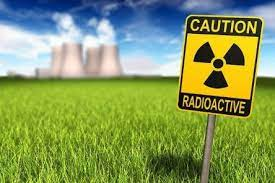
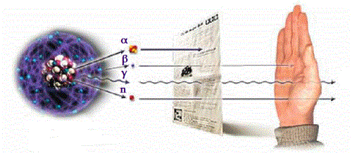
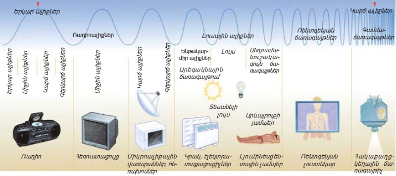

36. ճառագայթաակտիվություն: ազդեցությունը մարդու օրգանիզմի վրա
Ճառագայթում

ներթափանցող ճառագայթում, ռադիացիոն պաշտպանություն, պաշտպանություն ռադիոակտիվ և ռենտգենյան ճառագայթումից, նուկլիդներ, ռադիոնուկլիդներ և այլն։ Այս եզրերի բազմազանություը, որոնք որոշ չափով կրկնում են միմյանց, հաճախ բերում են ոչ միանշանակ հասկացության ու մեկնաբանման։
Որոշ աբստրակտացմամբ կարելի է ասել, որ ճառագայթումը դա երևույթ է, որը տեղի է ունենւմ ռադիոակտիվ տարրերում, միջուկային ռեակտորներում, ատոմային զենքի կիրառման ժամանակ, որի ընթացքում արձակվում են մասնիկներ և բազմազան ճառագայթներ, ինչի արդյունքում առաջանում են մարդու վրա ազդող վնասակար և վտանգավոր գործոններ։ Հետևաբար, իոնացնող ճառագայթումը դա ռադիոակտիվ տարրերում ընթացող ֆիզիկաքիմիական պրոցեսների կողմերից մեկն է։ Ներթափանցող ճառագայթումը կարելի է հասկանալ ինչպես իոնացնող ճառագյթման խոցող գործոն, որը առաջանում է, օրինակ միջուկային ռեակտորի պայթյունի ժամանակ։ Իոնացնող ճառագայթումը դա ցանակցած ճառագայթ է, որը առաջ է բերում միջավայրի իոնացում, այսինքն՝ միջավայրում (ինչպես և մարդու օրգանիզմում) էլեկտրական հոսանքի առաջացում, որը բերում է բջիջների քայքայմանը, արյան բաղադրության փոփոխմանը, այրվածքների և այլ ծանր հետևանքների։

Իոնացնող ճառագայթման տեսակները և աղբյուրները
Իոնացնող ճառագայթման աղբյուր են հանդիսանում ռադիոակտիվ տարրերը և նրանց իզոտոպները, միջուկային ռեակտորները, լիցքավորված մասնիկների արագացուցիչները և այլն։ Ռենտգենյան սարքավորումները, հաստատուն հոսանքի բարձրավոլտ աղբյուրները հանդիսանում են ռենտգենյան ճառագայթման աղբյուր։

Այստեղ պետք է նշել որ նորմալ օգտագործման ժամանակ նրանց վտանգը չնչին է, այն մեծանում է վթարային ռեժիմում և կարող է երկար ժամանակ հանդես գալ միջավայրի ռադիոակտիվ աղտոտման տեսքով։ Իոնացնող ճառագայթումը բաժանվում է 2 տիպի՝ Էլեկտրամագնիսական (γ և ռենտգենյան ճառագայթներ) և կորպուսկուլար՝ α և β մասնիկներ, նեյտրոններ և այլն։ Իրենց հատկություններով α մասնիկները ունեն փոքր թափանցելիություն և մեծ վտանգ չեն ներկայացնում, մինչդեռ α մասնիկներ ճառագայթող նյութը չի ներթափանցել օրգանիզմ վերքի միջով կամ սննդի կամ ներշնչած օդի հետ միասին։ Այս դեպքում նրանք չափազանց վտանգավոր են։β մասնիկները կարող են ներթափանցել օրգանիզմ մինչև 2սմ խորություն։ Մեծ թափանցելիություն ունեն γ մասնիկները, որոնք տարածվում են լույսի արագությամբ։ Վերջիննես կարող են արգելակվել միայն կապարի կամ բետոնի հաստ շերտով։
Ճառագայթումը մեր շուրջը
Ինչպես է ազդում ճառագայթումը մարդու և շրջակա միջավայրի վրա։ Սա այսօրվա բազմաթիվ խնդիրներից մեկն է և այն, որը շատ մարդկանց ուշադրություն է գրավում։ Ճառագայթումը, իսկապես, վտանգավոր է. մեծ քանակություններով այն բերում է հյուսվածքների, կենդանի բջիջների քայքայման, իսկ փոքր չափաբաժիններով՝ առաջացնում է քաղցկեղային հիվանդություններ և խթանում է գենետիկական փոփոխությունները։ Սակայն, վտանգ են ներկայացնում ոչ այն ճառագայթման աղբյուրները, որոնց մասին ընդունված է խոսել։ Միջուկային էներգետիկայի զարգացումից եկող ճառագայթման բաժինը չնչին մաս է կազմում, ճառագայթման հիմնական մասը ազգաբնակչությունը ստանում է ճառագայթման բնական աղբյուրներից՝ տիեզերքից, երկրակեղևում գտնվող ռադիոակտիվ նյութերից, բժշկությունում կիրառվող ռենտգենյան սարքավորումներից։ Մարդիկ նույնպես ճառագայթվում են ինքնաթիռով երթևեկելիս։ Քարածխի ահռելի քանակությունների այրումը նույնպես ճառագայթման աղբյուր է։ Ռադիոակտիվությունը նոր երևույթ չէ, և կապել նրա առկայությունը ատոմային էլեկտրակայանների կառուցման կամ միջուկային զենքի ստեղծման հետ սխալ է։ Այն գոյություն է ունեցել երկրի վրա շատ ավելի վաղ, քան կյանք է առաջացել։ Տիեզերքի առաջացման պահից՝ արդեն 20 միլիարդ տարի, ճառագայթումը անընդհատ տարածվում է տիեզերքում։ Շատերը զարմանում են, պարզելով, որ մարդը նույնպես որոշ չափով ռադիոակտիվ է։ Մարդու մկաններում, ոսկորներում և մի շարք այլ հյուսվածքներում կան ռադիոակտիվ նյութերի միկրոսկոպիկ բաժիններ։ Քանի որ ճառագայթման հիմնական չափաբաժինը ազգաբնակչությունը ստանում է ճառագայթման բնական աղբյուրներից, նրանց մեծ մասից խուսափել պարզապես անհնար է։ Մարդը ենթարկվում է ճառագայթման 2 տեսակների՝ արտաքին և ներքին։ Ճառագայթման չափաբաժինները զգալիորեն տարբերվում են և կախված են նրանից, թե որտեղ է մարդ ապրում։
Ճառագայթման արտաքին աղբյուրները
Տիեզերական ճառագայթմամբ ստեղծվող ռադիոակտիվ ֆոնը (0.3 մԶվտ/տարին) կազմում է մարդու ստացած ողջ արտաքին ճառագայթման (0.65 մԶվտ/տարին) կեսից փոքր-ինչ քիչ։ Երկրի վրա գոյություն չունի այնպիսի տեղ, որտեղ չներթափանցեն տիեզերական ճառագայթները։ Պետք է նշել, որ բևեռները ճառագայթվում են ավելի շատ, քան հասարակածը։ Սա կապված է երկրի մագնիսական դաշտի առկայության հետ, որի ուժագծերը մտնում և դուրս են գալիս բևեռներում։ Այնուամենայնիվ ավելի մեծ դեր է խաղում այն, թե որտեղ է գտնվում մարդը։ Որքան բարձր է մարդ ծովի մակարդակից, այնքան մեծ է ճառագայթման աստիճանը, քանզի օդային շերտի հաստությունը և խտությունը բարձրանալու հետ նվազում է և թուլանում են պաշտպանիչ ունակությունները։ Այսինքն՝ ծովի մակարդակի վրա ապրողը ստանում է տարեկան 0.3 մԶվտ, իսկ 4000 մետր բարձրության վրա ճառագայթումը արդեն 1.7 մԶվտ է։ 12կմ բարձրության վրա, տիեզերական ճառագայթների հաշվին, ճառագայթման մակարդակը աճում է երկրայինից 25 անգամ։ Ինքնաթիռների անձնակազմը ստանում է 10 մկԶվտ չափաբաժին 2400կմ անցնելիս։ Այստեզ նշանակություն ունի ոչ միայն թռիչքի տևողությունը, այլև բարձրությունը։ Երկրային ռադիացիան՝ միջինում 0.35 մԶվտ/տարին, հիմանականում ճառագայթվում է այն օգտակար հանածոներից, որոնք պարունակում են կալիում-40, ռուբիդիում-87, ուրանիում-238 և թորիում-234։ Բնականաբար երկրային ռադիոակտիվությունը ամենուրեք նույնը չէ, այն տատանվում է միջինում 0.3 - 0.5 մԶվտ/տարին սահմաններում։ Գոյություն ունեն վայրեր, որտեղ այս ցուցանիշը բազմաթիվ անգամներ մեծ է։